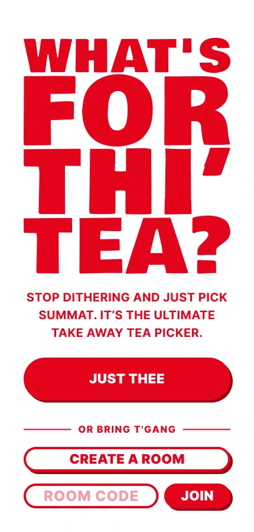
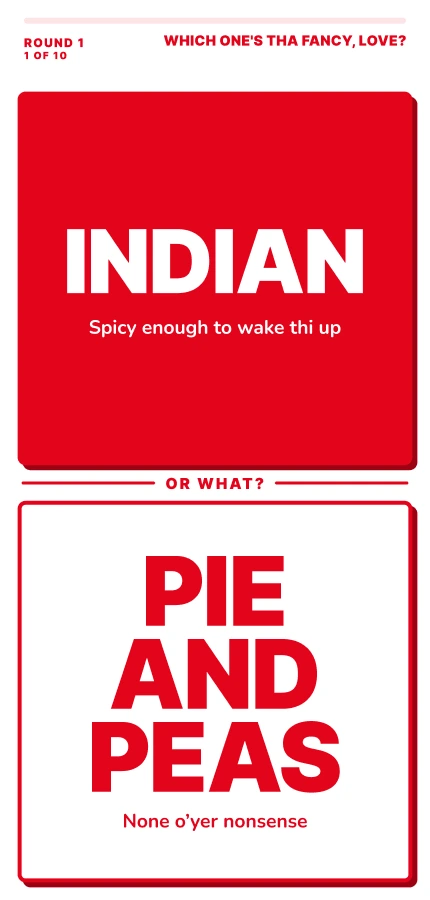
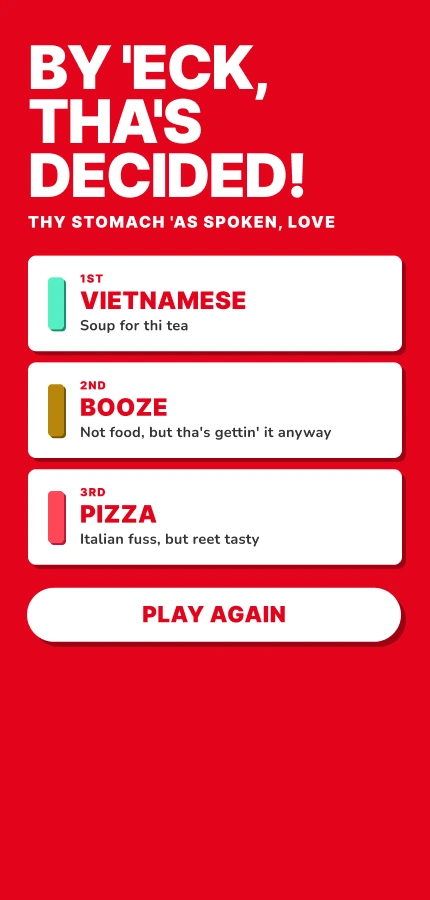
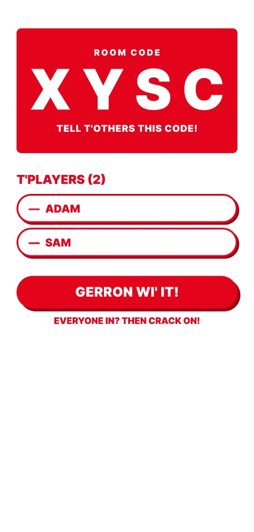
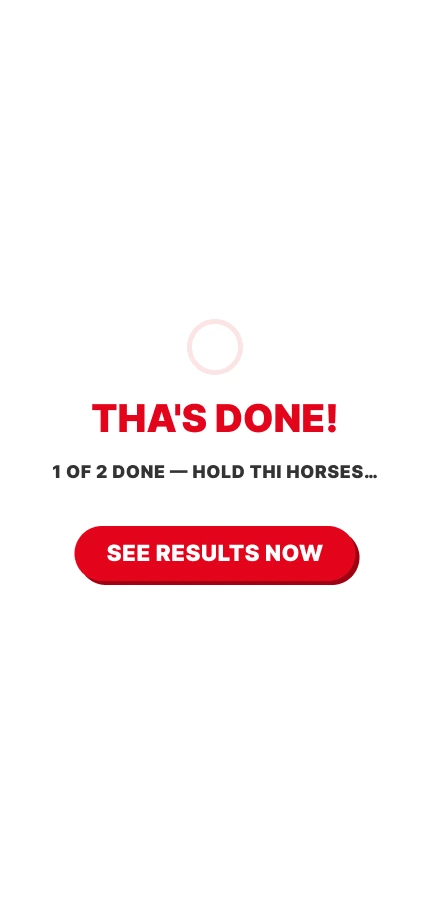
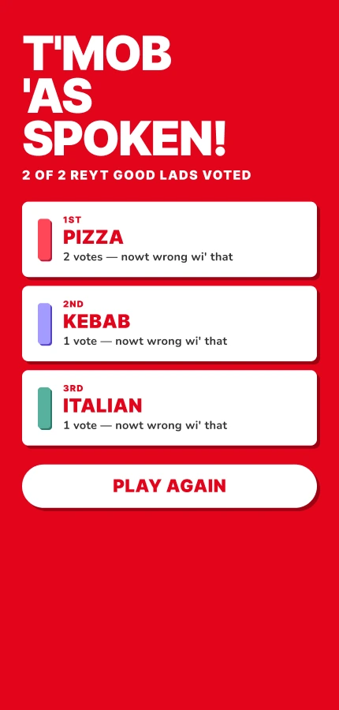

What’s for thi tea?
In short.
A takeaway decider with a Yorkshire accent. For the evenings when nobody can decide what’s for tea.
Two options at a time. Ten rounds, then a final, then a ranking of the winners. Play solo, or make a room and let everyone vote on their own phone.
Choosing between two things is easier than choosing from a whole menu. The rounds do the deciding.
Try it.
→ whats-for-thi-tea.whats-for-tea.workers.dev
How it works.
On your own.
Ten quick rounds, then your stomach gets the final say.

1. Start.
Tap Just thee to play solo. Got a room code? Pop it in and join.

2. Choose, round by round.
Two options a round, ten rounds. Here it’s Indian against Pie and peas, each with a Yorkshire aside.

3. The verdict.
First, second and third, then Play again if tha’s not happy.
With the gang.
Make a room, share the code and everyone votes on their own phone. The mob’s ranking decides.

1. Fill the lobby.
Everyone sees the room code and who’s joined. The host starts the game once everyone’s in.

2. Wait for the others.
Finish early and you see how many have voted. Tap See results now if tha can’t wait.

3. The mob decides.
The group’s ranking, with a vote count for each pick.